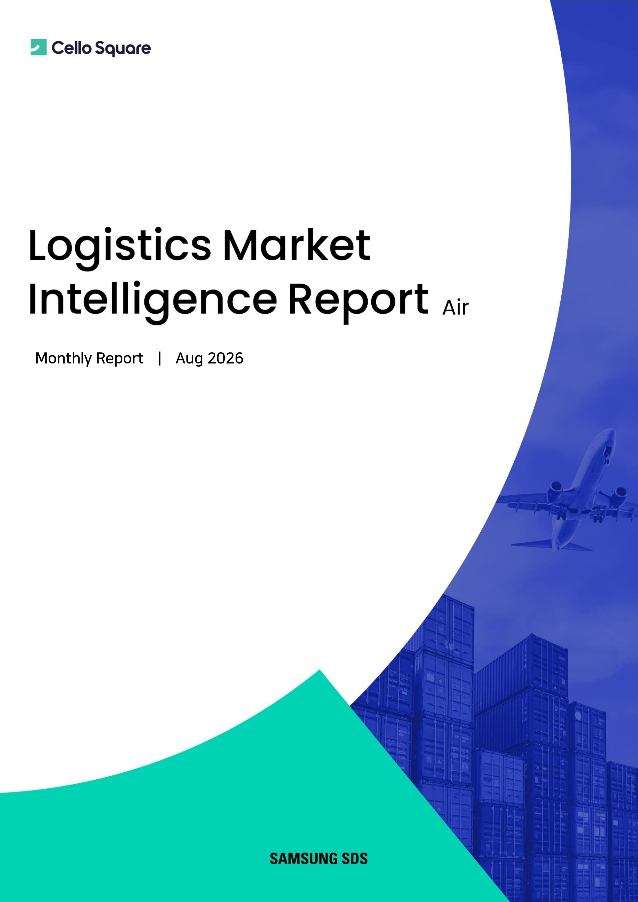

High-tech cargo remains resilient, while market conditions increasingly diverge by lane
Global air cargo demand increased 9.6% YoY in June 2026, supported by high-value technology cargo such as semiconductors and AI servers. In July, however, weekly volumes softened for four consecutive weeks as weaker Europe-bound e-commerce demand contrasted with continued double-digit growth in AI and semiconductor shipments from Taiwan, Korea and Vietnam to North America.
Supply is also being reallocated. July global capacity increased 1.8% YoY, with freighter capacity up 6.3% while passenger aircraft capacity declined 2.8%. This whitepaper reviews air cargo demand and supply, throughput at major airports, Baltic Air Freight Index trends and lane-level rate movements, together with Samsung SDS's short-term outlook for August and September.

Key Concepts
- Air Cargo Demand
- The overall volume of cargo transported by air. The report uses market indicators to compare YoY and MoM demand changes and to identify differences across major regions and trade lanes.
- Load Factor
- The share of available air cargo capacity utilized by actual demand. It is a key indicator of supply-demand balance and can signal a tighter market when demand grows faster than capacity.
- Belly Capacity
- Cargo capacity carried in the lower deck of passenger aircraft. Because it depends on passenger flight schedules and widebody operations, changes in passenger networks directly affect cargo supply.
- Freighter Capacity
- Capacity provided by dedicated cargo aircraft. In July 2026, freighter capacity increased 6.3% YoY and led overall global air cargo supply growth.
- Transpacific
- Trade lanes connecting Asia and North America across the Pacific. In July, Northeast Asia-origin transpacific freighter capacity expanded sharply as carriers redeployed capacity toward higher-yield lanes.
- Baltic Air Freight Index
- An index reflecting weekly transaction rates for general air cargo. It is used to track overall market direction and compare freight rate trends across major lanes.
- Samsung SDS TAC Forecast
- A short-term rate outlook based on Samsung SDS Brightics for key Asia-to-North America air cargo lanes, used in this report to assess expected rate direction through August and September.
Project Logistics, Explained Through Key Questions
-
-
Q1.
What is the defining feature of the August 2026 air freight market?
-
The key feature is widening lane differentiation. Global demand grew strongly in June, but weekly volumes softened for four consecutive weeks in July after an early-month high-tech surge.
Europe-bound e-commerce weakened following the EU low-value cargo tariff, while AI and semiconductor shipments from Taiwan, Korea and Vietnam to North America continued double-digit growth. Market averages therefore tell only part of the story; cargo mix and lane-specific conditions are becoming increasingly important.
-
Q1.
-
-
Q2.
Which cargo segments are driving air freight demand?
-
High-value technology cargo, particularly semiconductors and AI servers, remains a major demand driver. In June, resilient Asia-to-North America demand for these products and intra-Asia high-tech cargo flows supported overall growth.
In July, AI and semiconductor volumes from Taiwan, Korea and Vietnam continued to grow at double-digit rates, led by North America-bound lanes. At the same time, weaker Europe-bound e-commerce changed the cargo mix and widened regional divergence.
-
Q2.
-
-
Q3.
Is capacity keeping pace with demand growth?
-
June global supply increased 4.9% YoY, below the 9.6% increase in demand, keeping the market on a relatively tight supply-demand footing. July supply increased 1.8% YoY as the market moved gradually toward peak season.
The supply mix also shifted. Freighter capacity increased 6.3% YoY while passenger aircraft capacity declined 2.8%. Northeast Asia-origin transpacific freighter capacity surged 16% YoY, showing a clear shift toward higher-yield lane deployment.
-
Q3.
-
-
Q4.
How did cargo throughput change at major airports?
-
In June 2026, Frankfurt handled 173.5K tonnes of cargo, up 2.0% YoY, while Hong Kong handled 436.0K tonnes, up 6.6%. Los Angeles reached 207.3K tonnes, up 11.6%, and Singapore Changi recorded 187.0K tonnes, up 8.1%.
LAX benefited from transpacific semiconductor and electronics inflows from Asia, while HKG and SIN were supported by transshipment and high-tech cargo. The airport data reinforces the importance of technology cargo and hub connectivity in current demand patterns.
-
Q4.
-
-
Q5.
What happened to air freight rates in July?
-
The Week 31 Baltic Air Freight Index stood at 2,393, down 0.6% WoW. The July average was 2,460, down 8.6% MoM but still 20.4% above the year-ago level.
China- and Hong Kong-origin rates to Europe declined 8.5-16.4% MoM following the low-value cargo tariff. Korea- and Taiwan-origin rates fell only around 1% MoM as semiconductor and AI server demand limited the decline, while India-to-North America rates rose 6.4% MoM.
-
Q5.
-
-
Q6.
What is the near-term rate outlook and which risks matter most?
-
The Week 31 Baltic Air Freight Index stood at 2,393, down 0.6% WoW, while the July average was 2,460, down 8.6% MoM but still 20.4% above the year-ago level. China- and Hong Kong-origin rates to Europe weakened more sharply, while Korea- and Taiwan-origin rates remained relatively firm on semiconductor and AI server demand.
Samsung SDS expects a possible rebound on Asia-to-North America lanes and continued softness on Europe-bound lanes. Extended Middle East airspace restrictions, rerouting, jet fuel costs, Europe-bound e-commerce demand and North America-bound high-tech cargo remain the key variables to monitor.
-
Q6.
August 2026 Air Freight Market: Key Takeaways at a Glance
| Category | Key Content |
|---|---|
| Main Topic | August 2026 global air cargo demand, supply and lane-specific freight rate outlook |
| Global Demand | June demand increased 9.6% YoY, led by high-value technology cargo such as semiconductors and AI servers |
| July Demand | Weekly volumes softened for four consecutive weeks after early-month strength |
| North America | AI and semiconductor volumes from Taiwan, Korea and Vietnam continued double-digit growth |
| Europe | E-commerce demand weakened following the EU low-value cargo tariff |
| Global Supply | June supply increased 4.9% YoY but remained below demand growth, keeping the market relatively tight |
| Freighter Capacity | July freighter capacity increased 6.3% YoY and led overall supply growth |
| Capacity Shift | Northeast Asia-origin transpacific freighter capacity increased 16% YoY as supply shifted toward higher-yield lanes |
| Major Airports | June throughput grew 11.6% at LAX, 8.1% at SIN, 6.6% at HKG and 2.0% at FRA YoY |
| Air Freight Index | Week 31 Baltic Air Freight Index stood at 2,393, down 0.6% WoW |
| July Average | Index averaged 2,460, down 8.6% MoM but still 20.4% above the year-ago level |
| N.A. Rates | Korea- and Taiwan-origin rates remained relatively firm on semiconductor and AI server demand |
| Europe Rates | China- and Hong Kong-origin rates weakened as e-commerce demand contracted |
| N.A. Outlook | Rates may stabilize or edge higher on Korea- and Taiwan-origin lanes |
| Europe Outlook | Europe-bound rates are expected to remain soft ahead of peak season |
| Key Risks | Middle East airspace restrictions, rerouting and jet fuel costs may renew rate volatility |